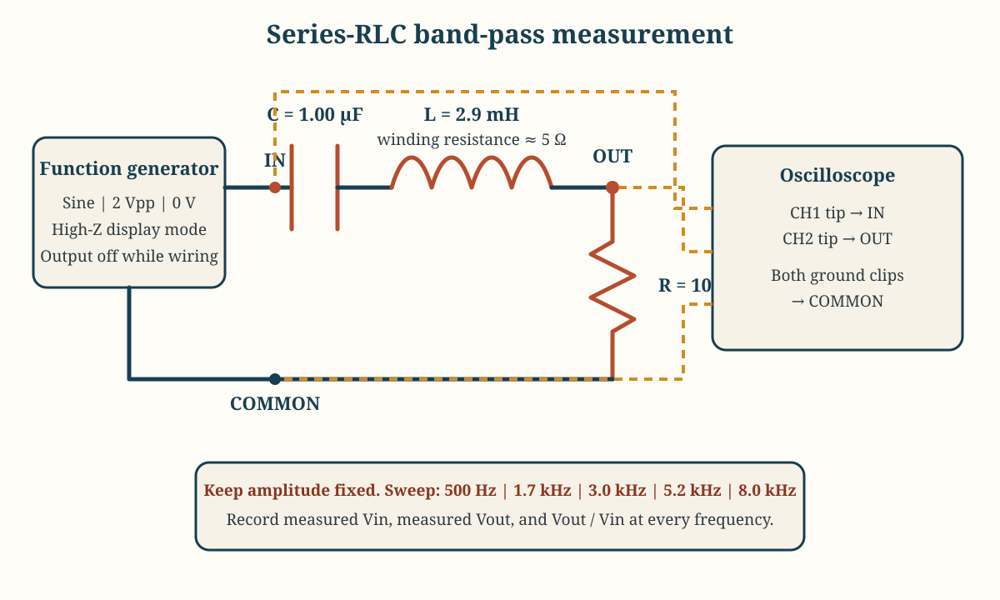
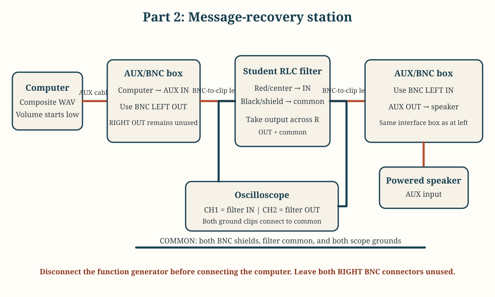

Laboratory
Lab 04 · Week 4 · September 25, 2026
Recover the Hidden Message
Build a tuned RLC receiver, measure which frequencies it favors, and use it to recover a hidden Morse-code word from competing signals
Learning Outcomes
By the End of This Lab
- Build and verify a series-RLC band-pass filter
- Predict its resonant frequency from component values
- Measure input and resistor-output voltage over a controlled frequency sweep
- Use Vout / Vin to identify the measured pass-frequency peak
- Recover a tone-coded message from stronger out-of-band signals
- Explain one capability and one limitation of receiver filtering
The Big Picture
What You Are Doing
- Calculate the expected resonant frequency of the assigned RLC circuit.
- Build the circuit and measure its response at five frequencies while keeping the source settings fixed.
- Identify the frequency favored by the circuit using measured Vout / Vin.
- Replace the function generator with a prerecorded composite signal and use the same circuit to recover a hidden Morse-code word.
Before Lab
Preparation
- Review inductive reactance, capacitive reactance, impedance, series resonance, and band-pass filters
- Bring a calculator and open the Lab 4 report before beginning
- Remember that the function generator's High-Z display setting does not remove its internal output resistance; measure the actual circuit input with the oscilloscope
- Connect every source ground, oscilloscope ground, and speaker-input ground to circuit common
- Never connect the computer output and function-generator output at the same time
Student Resources
Lab Report and Circuit Diagrams


Follow These Steps
Lab Walkthrough
Part 1: Prepare the Measurement Bench
- Open the Lab 4 report and enter your name and lab partners.
- Record the assigned and measured component values. Use resistance mode only while the circuit is disconnected from every source.
- Calculate the predicted resonant frequency using
f0 = 1 / (2 pi sqrt(LC)). With the nominal components, the result should be close to3.0 kHz. - Divide the work among builder, generator/scope operator, and recorder. Every student submits an individual report.
- Set both physical probes and oscilloscope channels to
10xand DC coupling. Connect both probe ground clips only to circuit common. - Set the function generator to a
2 Vppsine wave,0 Voffset, and High-Z display mode, but keep its output disabled.
Build the Series-RLC Filter
- With the source disabled, build one series path from generator signal through
C, thenL, then toOUT. Connect the10 Ωresistor fromOUTto common. - Connect Channel 1 from circuit
INto common to measure the actualVin. Connect Channel 2 fromOUTto common to measureVoutacross the resistor. - Trace the complete current path with a teammate and compare the build with the circuit diagram before enabling the source.
- Photograph the verified circuit and probe locations.
Measure the Frequency Response
- Enable the generator at
500 Hz. Verify a stable sine wave on both channels before recording measurements. - Test
500 Hz,1.7 kHz,3.0 kHz,5.2 kHz, and8.0 kHzin that order. Change frequency only; do not change source amplitude, offset, circuit, probe factors, or acquisition mode. - At each frequency, record measured
Vin, measuredVout, andVout / Vin. Use measuredVin, not the generator display, because source resistance changes the voltage delivered to the circuit. - Identify the frequency with the largest
Vout / Vin. If3.0 kHzis not the largest point, ask the instructor before adding a check between2.8 kHzand3.2 kHz. - Save the peak-response capture before changing connections.
- Compare the measured peak with the predicted resonance and state whether the sweep shows a band-pass response.
Part 2: Check the Unfiltered Message
- Disable and disconnect the function generator before attaching the computer source.
- At the shared station, connect the computer to
AUX INand the powered speaker toAUX OUT. Begin with both volume controls low. - For the unfiltered check, connect
BNC LEFT OUTdirectly toBNC LEFT INwith one BNC cable. Leave both right-channel BNC connectors unused. - Play the assigned composite track once. Record what you hear and why the intended word is difficult to distinguish. Do not record a decoded answer yet.
- Stop playback and remove the direct BNC loopback before inserting the filter.
Recover the Hidden Message
- Connect
BNC LEFT OUTthrough a BNC cable and BNC-to-banana adapter to circuitINand common. Red/center goes toIN; black/shield goes to common. - Connect circuit
OUTand common through the second BNC-to-banana adapter and BNC cable toBNC LEFT IN. Red/center goes toOUT; black/shield goes to common. - Keep Channel 1 on filter
INand Channel 2 on filterOUT. The oscilloscope and speaker now observe the same filtered output in parallel. - Replay the same composite track at the approved volume. Use the provided Morse reference to decode the repeated word.
- Record the decoded word and the direct observation or measurement that makes the answer more defensible than a guess.
- If the message is not clearer, stop and ask the instructor to check the peak frequency, common connections, source level, and speaker loading before changing components.
Finish and Submit
- Complete all three Content tables, including component values, calculations, five-point response data, and the message comparison.
- Complete the Evidence section with the circuit photograph, peak-response capture, and message-recovery capture.
- Complete the Conclusion in your own words and answer every listed question.
- Stop playback, disconnect the computer source, disable the generator, restore probes and channels to
10x, remove components, and return all adapters and cables. - Save the completed report, export it as a PDF, and submit the PDF through Learning Suite.
Why This Lab Matters
- Receiver filtering can preserve availability by favoring an intended channel while reducing out-of-band interference
- A selective filter cannot remove interference that overlaps its passband
- Input-versus-output measurements support claims about receiver behavior but do not identify the source or intent of interference
- This activity uses a wired prerecorded signal and does not radiate or jam an external communication system
Submission
- Complete the individual Lab 4 report and submit it in PDF form through Learning Suite